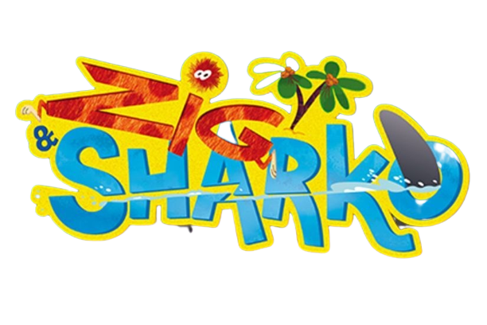
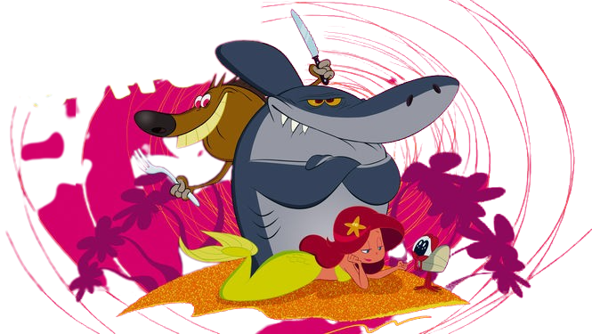

Zig é uma hiena faminta que vive em uma ilha vulcânica; ele sempre tenta devorar Marina, uma bela sereia que vive no recife próximo, mas nunca consegue, pois seu amigo, o tubarão Sharko, sempre a protege. Zig sempre é ajudado pelo caranguejo ermitão Bernie.
